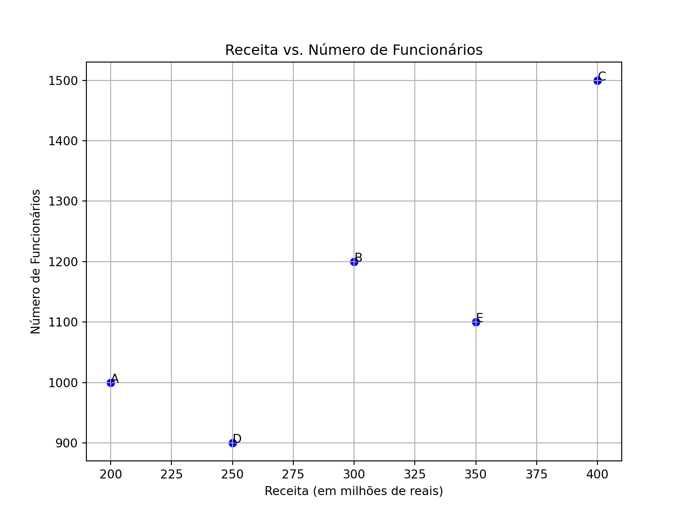
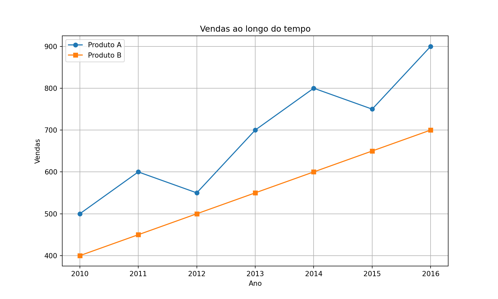

Warning: pacote 'reticulate' foi compilado no R versão 4.5.26 Processamento e visualização de dados
6.1 Instalação de bibliotecas
A instalação de bibliotecas em Python é essencial para expandir a funcionalidade da linguagem. Existem várias maneiras de instalar bibliotecas, mas a mais comum é usando um gerenciador de pacotes. O pip é o gerenciador de pacotes padrão para Python e geralmente acompanha a instalação do Python.
Para instalar uma biblioteca com pip, abra o terminal ou prompt de comando e digite o seguinte comando:
pip install nome_da_bibliotecaSubstitua nome_da_biblioteca pelo nome da biblioteca que você deseja instalar.
6.2 Processamento de dados numéricos
O NumPy (Numerical Python) é uma biblioteca essencial para computação numérica em Python. Ele fornece estruturas de dados eficientes para trabalhar com arrays multidimensionais e funções matemáticas poderosas para manipulação de dados.
Para instalar o NumPy, você pode usar o pip, que é o gerenciador de pacotes padrão do Python:
pip install numpyO principal objeto em NumPy é o array multidimensional. Você pode criar arrays NumPy usando a função numpy.array() e realizar operações matemáticas básicas com eles:
import numpy as np
# Criando um array NumPy
arr = np.array([1, 2, 3, 4, 5])
# Operações matemáticas básicas
print("Soma:", np.sum(arr))Soma: 15print("Média:", np.mean(arr))Média: 3.0Além das operações básicas, o NumPy oferece funções universais (ufuncs) para aplicar operações em todos os elementos de um array de uma vez:
# Funções universais (ufuncs)
arr = np.array([1, 2, 3, 4, 5])
print("Quadrado de cada elemento:", np.square(arr))Quadrado de cada elemento: [ 1 4 9 16 25]print("Exponencial de cada elemento:", np.exp(arr))Exponencial de cada elemento: [ 2.71828183 7.3890561 20.08553692 54.59815003 148.4131591 ]A seguir, apresentamos três exemplos práticos de utilização das funções do NumPy.
Exemplo 1: Cálculo de Estatísticas Descritivas
O NumPy pode ser usado para calcular estatísticas descritivas, como média, mediana, desvio padrão, mínimo e máximo de séries temporais de dados econômicos, como o preço das ações de uma empresa ao longo do tempo.
import numpy as np
# Preço das ações de uma empresa ao longo do tempo (em dólares)
precos = np.array([100, 102, 105, 110, 108, 115, 120])
# Calculando estatísticas descritivas
print("Média:", np.mean(precos))Média: 108.57142857142857print("Desvio padrão:", np.std(precos))Desvio padrão: 6.58693821908486print("Máximo:", np.max(precos))Máximo: 120print("Mínimo:", np.min(precos))Mínimo: 100Exemplo 2: Análise de Séries Temporais O NumPy é útil para manipulação e análise de séries temporais. Por exemplo, você pode usar NumPy para calcular a taxa de retorno de um investimento ao longo do tempo ou para suavizar uma série temporal usando médias móveis.
precos = np.array([100, 102, 105, 110, 108, 115, 120])
# Calcular a taxa de retorno de um investimento ao longo do tempo
retornos = np.diff(precos) / precos[:-1] * 100
print("Taxa de retorno:", retornos)Taxa de retorno: [ 2. 2.94117647 4.76190476 -1.81818182 6.48148148 4.34782609]
Dica
A função np.diff em NumPy é usada para calcular a diferença entre elementos consecutivos ao longo de um determinado eixo de um array. Atenção: O tamanho do retorno da função np.diff será sempre menor que o tamanho do vetor original de entrada por um elemento. Por exemplo, se tivermos um vetor unidimensional com \(n\) elementos, a função np.diff retornará um vetor com \(n−1\) elementos, pois não há diferença para o último elemento.
precos = np.array([100, 102, 105, 110, 108, 115, 120])
# Suavizar uma série temporal usando médias móveis
tamanho_janela = 3
media_movel = np.convolve(precos, np.ones(tamanho_janela) / tamanho_janela, mode='valid')
print("Médias móveis:", media_movel)Médias móveis: [102.33333333 105.66666667 107.66666667 111. 114.33333333]
Dica
A função np.convolve em NumPy é usada para realizar a convolução entre duas sequências, representadas por dois vetores unidimensionais. A convolução é uma operação matemática que combina duas funções para produzir uma terceira função que representa a quantidade de sobreposição entre elas conforme uma delas é deslocada ao longo do eixo.
A sintaxe básica da função é np.convolve(a, b, mode='full'), onde a e b são os dois vetores unidimensionais a serem convolvidos e mode é um parâmetro opcional que define o modo de convolução. Os modos mais comuns são:
'full': Retorna a saída completa da convolução. O comprimento do resultado serálen(a) + len(b) - 1.'valid': Retorna apenas pontos onde as sequências se sobrepõem completamente. O comprimento do resultado serámax(len(a), len(b)) - min(len(a), len(b)) + 1.'same': Retorna a saída do mesmo tamanho que o vetor de entrada mais longo. O comprimento do resultado serámax(len(a), len(b)).
No exemplo anterior, a função np.convolve foi usada aqui para calcular a média móvel dos preços. Nesse caso, a primeira sequência é o vetor de preços e a segunda sequência é um vetor de 1s dividido pelo tamanho da janela de média móvel. Isso cria uma sequência que representa uma média ponderada dos valores.
Exemplo 3: Simulação Monte Carlo O NumPy pode ser usado para realizar simulações Monte Carlo, que são amplamente utilizadas na modelagem financeira e na avaliação de risco. Por exemplo, você pode simular o desempenho de uma carteira de investimentos ao longo do tempo sob diferentes cenários de mercado.
# Simulação Monte Carlo do desempenho de uma carteira de investimentos
num_simulacoes = 1000
num_anos = 10
retorno_medio = 0.08
volatilidade = 0.15
# Gerar retornos aleatórios usando uma distribuição normal
retornos = np.random.normal(retorno_medio, volatilidade, size=(num_simulacoes, num_anos))
# Calcular o valor final da carteira para cada simulação
investimento_inicial = 10000
valores_finais = investimento_inicial * np.cumprod(1 + retornos, axis=1)
# Estatísticas descritivas dos valores finais da carteira
print("Valor final médio:", np.mean(valores_finais[:,-1]))Valor final médio: 21416.603413302855print("Desvio padrão dos valores finais:", np.std(valores_finais[:,-1]))Desvio padrão dos valores finais: 9355.96745039509Mais referências sobre NumPy:
Documentação oficial do NumPy: https://numpy.org/doc/stable/ A documentação oficial do NumPy contém informações detalhadas sobre todas as funções e métodos disponíveis, além de tutoriais e exemplos.
NumPy Quickstart Tutorial: https://numpy.org/doc/stable/user/quickstart.html Este tutorial rápido fornece uma introdução rápida ao NumPy e suas funcionalidades básicas.
6.3 Análise e processamento de dados
O pandas é uma biblioteca de código aberto amplamente utilizada em Python para análise e manipulação de dados. Ele fornece estruturas de dados flexíveis e ferramentas poderosas para trabalhar com dados estruturados, facilitando a análise, limpeza e preparação de dados para diversas aplicações, como ciência de dados, finanças, pesquisa acadêmica e muito mais.
6.4 O que é pandas?
Pandas é uma biblioteca Python de código aberto que oferece estruturas de dados de alto desempenho e ferramentas de análise de dados. O pandas foi projetado para lidar com as complexidades do mundo real em análise de dados, oferecendo uma interface simples e intuitiva para trabalhar com dados tabulares.
Pandas é amplamente utilizado em análise de dados devido à sua capacidade de:
- Importar e exportar dados de uma variedade de fontes, incluindo arquivos CSV, Excel, SQL, JSON, HDF5 e mais.
- Manipular dados de forma eficiente, incluindo indexação, filtragem, agregação e limpeza.
- Realizar operações estatísticas e matemáticas em dados, como média, soma, desvio padrão, correlação, etc.
As duas principais estruturas de dados fornecidas pelo pandas são series e dataframes.
6.4.1 Séries
Uma Serie é uma estrutura de dados unidimensional que pode conter qualquer tipo de dados, como inteiros, floats, strings, entre outros. Cada elemento em uma Série possui um rótulo único chamado de índice. A Série é semelhante a uma lista ou array unidimensional em Python, mas fornece recursos adicionais, como operações vetorizadas e alinhamento automático de dados com base nos rótulos de índice.
Suponha que temos uma Série representando os preços diários de uma ação:
| Data | Preço |
|---|---|
| 2024-03-18 | 100 |
| 2024-03-19 | 105 |
| 2024-03-20 | 98 |
| 2024-03-21 | 102 |
Podemos criar uma Serie pandas para representar esses dados:
import pandas as pd
# Dados dos preços da ação
data = ['2024-03-18', '2024-03-19', '2024-03-20', '2024-03-21']
precos = [100, 105, 98, 102]
# Criando uma Série pandas
serie_precos_acao = pd.Series(precos, index=pd.to_datetime(data), name='Preço da Ação')
print(serie_precos_acao)2024-03-18 100
2024-03-19 105
2024-03-20 98
2024-03-21 102
Name: Preço da Ação, dtype: int646.4.2 DataFrame
DataFrame é uma estrutura de dados bidimensional semelhante a uma tabela de banco de dados ou uma planilha do Excel. Ele é composto por linhas e colunas, onde cada coluna pode conter um tipo de dado diferente. Cada coluna e linha em um DataFrame possui um rótulo exclusivo chamado de índice e nome, respectivamente. O DataFrame permite realizar uma ampla gama de operações de manipulação e análise de dados, como indexação, filtragem, agregação, limpeza, entre outras.
Suponha que temos um DataFrame representando os preços diários de várias ações. Podemos criar um DataFrame pandas para representar esses dados. Veja no exemplo abaixo.
import pandas as pd
import numpy as np
# Dados dos preços das ações
data = ['2024-03-18', '2024-03-19', '2024-03-20', '2024-03-21']
precos_acoes = {
'Ação 1': [100, 105, np.nan, 102],
'Ação 2': [50, 52, 48, 49],
'Ação 3': [75, np.nan, 72, 74]
}
# Criando um DataFrame pandas
df_precos_acoes = pd.DataFrame(precos_acoes, index=pd.to_datetime(data))
print(df_precos_acoes) Ação 1 Ação 2 Ação 3
2024-03-18 100.0 50 75.0
2024-03-19 105.0 52 NaN
2024-03-20 NaN 48 72.0
2024-03-21 102.0 49 74.06.4.3 Principais funcionalidades
A função df.isna() é uma função fornecida pelo pandas em um DataFrame (df) que retorna uma matriz booleana indicando se cada elemento do DataFrame é um valor ausente (NaN).
Quando aplicada a um DataFrame, a função isna() retorna um DataFrame com o mesmo formato, onde cada valor é substituído por True se for NaN e False caso contrário.
Isso é útil para identificar rapidamente os valores ausentes em um DataFrame e realizar operações de limpeza ou tratamento de dados, como preenchimento de valores ausentes ou remoção de linhas ou colunas contendo esses valores.
Se aplicarmos df_precos_acoes.isna(), obteremos:
df_precos_acoes.isna()| Ação 1 | Ação 2 | Ação 3 | |
|---|---|---|---|
| 2024-03-18 | False | False | False |
| 2024-03-19 | False | False | True |
| 2024-03-20 | True | False | False |
| 2024-03-21 | False | False | False |
Para contar a quantidade de NaN em cada coluna, combine is.na() com sum():
df_precos_acoes.isna().sum()Ação 1 1
Ação 2 0
Ação 3 1
dtype: int64O método dropna() no pandas é usado para remover linhas ou colunas que contenham valores ausentes (NaN).
df_precos_acoes.dropna()| Ação 1 | Ação 2 | Ação 3 | |
|---|---|---|---|
| 2024-03-18 | 100.0 | 50 | 75.0 |
| 2024-03-21 | 102.0 | 49 | 74.0 |
O parâmetro subset é usado para especificar em quais colunas ou linhas o pandas deve procurar por valores ausentes antes de remover. Quando usamos df.dropna(subset=["Ação 3"]), estamos instruindo o pandas a remover todas as linhas onde houver um valor ausente na coluna “Ação 3”.
df_precos_acoes.dropna(subset=["Ação 3"])| Ação 1 | Ação 2 | Ação 3 | |
|---|---|---|---|
| 2024-03-18 | 100.0 | 50 | 75.0 |
| 2024-03-20 | NaN | 48 | 72.0 |
| 2024-03-21 | 102.0 | 49 | 74.0 |
Na função dropna(), o parâmetro inplace=True especifica que a modificação deve ser feita diretamente no DataFrame original, em vez de retornar um novo DataFrame sem os valores ausentes. Quando inplace=True é usado com dropna(), o DataFrame original é modificado e as linhas ou colunas com valores ausentes são removidas permanentemente.
df_precos_acoes.dropna(inplace = True)A função fillna() no pandas é usada para preencher valores ausentes (NaN) em um DataFrame com um valor específico.
Considere o seguinte DataFrame df que representa os dados de clientes de um banco com alguns dados faltantes:
import pandas as pd
import numpy as np
dados = {'Nome': ['João', 'Maria', 'Pedro', 'Ana', 'Mariana'],
'Idade': [25, 30, np.nan, 40, 35],
'Renda Mensal': [5000, 6000, np.nan, 4500, 5500],
'Limite de Crédito': [10000, np.nan, 8000, 12000, np.nan]}
df_clientes = pd.DataFrame(dados)Neste exemplo,
- Os valores ausentes na coluna “Idade” serão preenchidos com a mediana das idades existentes no DataFrame.
- Os valores ausentes na coluna “Limite de Crédito” serão preenchidos com a moda dos limites de crédito existentes no DataFrame.
- Os valores ausentes na coluna “Renda Mensal” serão preenchidos com a média das rendas mensais existentes no DataFrame.
Veja abaixo.
# Preenchendo valores ausentes na coluna 'Idade' com a mediana das idades
df_clientes['Idade'] = df_clientes['Idade'].fillna(df_clientes['Idade'].median())
# Preenchendo valores ausentes na coluna 'Limite de Crédito' com a moda dos limites de crédito
df_clientes['Limite de Crédito'] = df_clientes['Limite de Crédito'].fillna(df_clientes['Limite de Crédito'].mode()[0])
# Preenchendo valores ausentes na coluna 'Renda Mensal' com a média das rendas mensais
df_clientes['Renda Mensal'] = df_clientes['Renda Mensal'].fillna(df_clientes['Renda Mensal'].mean())
df_clientes| Nome | Idade | Renda Mensal | Limite de Crédito | |
|---|---|---|---|---|
| 0 | João | 25.0 | 5000.0 | 10000.0 |
| 1 | Maria | 30.0 | 6000.0 | 8000.0 |
| 2 | Pedro | 32.5 | 5250.0 | 8000.0 |
| 3 | Ana | 40.0 | 4500.0 | 12000.0 |
| 4 | Mariana | 35.0 | 5500.0 | 8000.0 |
Agora, vamos carregar os dados gapminder, que está no arquivo gapminder.zip.
gapminder = pd.read_csv("data/gapminder.zip", sep = "\t")A função head() é usada para visualizar as primeiras linhas do conjunto de dados gapminder, oferecendo uma rápida visão geral da sua estrutura e conteúdo.
gapminder.head()| country | continent | year | lifeExp | pop | gdpPercap | |
|---|---|---|---|---|---|---|
| 0 | Afghanistan | Asia | 1952 | 28.801 | 8425333 | 779.445314 |
| 1 | Afghanistan | Asia | 1957 | 30.332 | 9240934 | 820.853030 |
| 2 | Afghanistan | Asia | 1962 | 31.997 | 10267083 | 853.100710 |
| 3 | Afghanistan | Asia | 1967 | 34.020 | 11537966 | 836.197138 |
| 4 | Afghanistan | Asia | 1972 | 36.088 | 13079460 | 739.981106 |
O método info() fornece informações sobre o conjunto de dados, incluindo o número de entradas, o tipo de dados de cada coluna e se há valores nulos.
gapminder.info()<class 'pandas.DataFrame'>
RangeIndex: 1704 entries, 0 to 1703
Data columns (total 6 columns):
# Column Non-Null Count Dtype
--- ------ -------------- -----
0 country 1704 non-null str
1 continent 1704 non-null str
2 year 1704 non-null int64
3 lifeExp 1704 non-null float64
4 pop 1704 non-null int64
5 gdpPercap 1704 non-null float64
dtypes: float64(2), int64(2), str(2)
memory usage: 80.0 KBA função describe() gera estatísticas descritivas para cada coluna numérica do conjunto de dados, como contagem, média, desvio padrão, mínimo e máximo.
gapminder.describe()| year | lifeExp | pop | gdpPercap | |
|---|---|---|---|---|
| count | 1704.00000 | 1704.000000 | 1.704000e+03 | 1704.000000 |
| mean | 1979.50000 | 59.474439 | 2.960121e+07 | 7215.327081 |
| std | 17.26533 | 12.917107 | 1.061579e+08 | 9857.454543 |
| min | 1952.00000 | 23.599000 | 6.001100e+04 | 241.165876 |
| 25% | 1965.75000 | 48.198000 | 2.793664e+06 | 1202.060309 |
| 50% | 1979.50000 | 60.712500 | 7.023596e+06 | 3531.846988 |
| 75% | 1993.25000 | 70.845500 | 1.958522e+07 | 9325.462346 |
| max | 2007.00000 | 82.603000 | 1.318683e+09 | 113523.132900 |
A função value_counts() conta o número de ocorrências de cada categoria na coluna “continent” do conjunto de dados gapminder, transforma os resultados em um DataFrame, renomeia as colunas para “continent” e “n” (indicando a contagem), e reconfigura o índice.
gapminder.value_counts("continent").to_frame("n").reset_index()| continent | n | |
|---|---|---|
| 0 | Africa | 624 |
| 1 | Asia | 396 |
| 2 | Europe | 360 |
| 3 | Americas | 300 |
| 4 | Oceania | 24 |
No trecho abaixo, fazemos uma contagem de valores para as combinações únicas de categorias nas colunas “continent” e “year” do DataFrame gapminder. Os resultados são transformados em um DataFrame, renomeados como “continent”, “year” e “n” (indicando a contagem), e o índice é reconfigurado.
gapminder.value_counts(["continent", "year"]).to_frame("n").reset_index()| continent | year | n | |
|---|---|---|---|
| 0 | Africa | 1952 | 52 |
| 1 | Africa | 1957 | 52 |
| 2 | Africa | 1962 | 52 |
| 3 | Africa | 1967 | 52 |
| 4 | Africa | 1972 | 52 |
| 5 | Africa | 1977 | 52 |
| 6 | Africa | 1982 | 52 |
| 7 | Africa | 1987 | 52 |
| 8 | Africa | 1992 | 52 |
| 9 | Africa | 1997 | 52 |
| 10 | Africa | 2002 | 52 |
| 11 | Africa | 2007 | 52 |
| 12 | Asia | 1952 | 33 |
| 13 | Asia | 1957 | 33 |
| 14 | Asia | 1962 | 33 |
| 15 | Asia | 1967 | 33 |
| 16 | Asia | 1972 | 33 |
| 17 | Asia | 1977 | 33 |
| 18 | Asia | 1982 | 33 |
| 19 | Asia | 1987 | 33 |
| 20 | Asia | 1992 | 33 |
| 21 | Asia | 1997 | 33 |
| 22 | Asia | 2002 | 33 |
| 23 | Asia | 2007 | 33 |
| 24 | Europe | 1952 | 30 |
| 25 | Europe | 1957 | 30 |
| 26 | Europe | 1962 | 30 |
| 27 | Europe | 1967 | 30 |
| 28 | Europe | 1972 | 30 |
| 29 | Europe | 1977 | 30 |
| 30 | Europe | 1982 | 30 |
| 31 | Europe | 1987 | 30 |
| 32 | Europe | 1992 | 30 |
| 33 | Europe | 1997 | 30 |
| 34 | Europe | 2002 | 30 |
| 35 | Europe | 2007 | 30 |
| 36 | Americas | 1952 | 25 |
| 37 | Americas | 1957 | 25 |
| 38 | Americas | 1962 | 25 |
| 39 | Americas | 1967 | 25 |
| 40 | Americas | 1972 | 25 |
| 41 | Americas | 1977 | 25 |
| 42 | Americas | 1982 | 25 |
| 43 | Americas | 1987 | 25 |
| 44 | Americas | 1992 | 25 |
| 45 | Americas | 1997 | 25 |
| 46 | Americas | 2002 | 25 |
| 47 | Americas | 2007 | 25 |
| 48 | Oceania | 1952 | 2 |
| 49 | Oceania | 1957 | 2 |
| 50 | Oceania | 1962 | 2 |
| 51 | Oceania | 1967 | 2 |
| 52 | Oceania | 1972 | 2 |
| 53 | Oceania | 1977 | 2 |
| 54 | Oceania | 1982 | 2 |
| 55 | Oceania | 1987 | 2 |
| 56 | Oceania | 1992 | 2 |
| 57 | Oceania | 1997 | 2 |
| 58 | Oceania | 2002 | 2 |
| 59 | Oceania | 2007 | 2 |
6.5 Dados organizados (tidy data)
Todas as tabelas abaixo tem o mesmo dado (foram tiradas do pacote tidyr do R), que mostra a quantidade de casos de uma doença e a população total de alguns países.
table1 = pd.read_csv("data/table1.csv")
table2 = pd.read_csv("data/table2.csv")
table3 = pd.read_csv("data/table3.csv")
table4a = pd.read_csv("data/table4a.csv")
table4b = pd.read_csv("data/table4b.csv")table1| country | year | cases | population | |
|---|---|---|---|---|
| 0 | Afghanistan | 1999 | 745 | 19987071 |
| 1 | Afghanistan | 2000 | 2666 | 20595360 |
| 2 | Brazil | 1999 | 37737 | 172006362 |
| 3 | Brazil | 2000 | 80488 | 174504898 |
| 4 | China | 1999 | 212258 | 1272915272 |
| 5 | China | 2000 | 213766 | 1280428583 |
table2| country | year | type | count | |
|---|---|---|---|---|
| 0 | Afghanistan | 1999 | cases | 745 |
| 1 | Afghanistan | 1999 | population | 19987071 |
| 2 | Afghanistan | 2000 | cases | 2666 |
| 3 | Afghanistan | 2000 | population | 20595360 |
| 4 | Brazil | 1999 | cases | 37737 |
| 5 | Brazil | 1999 | population | 172006362 |
| 6 | Brazil | 2000 | cases | 80488 |
| 7 | Brazil | 2000 | population | 174504898 |
| 8 | China | 1999 | cases | 212258 |
| 9 | China | 1999 | population | 1272915272 |
| 10 | China | 2000 | cases | 213766 |
| 11 | China | 2000 | population | 1280428583 |
table3| country | year | rate | |
|---|---|---|---|
| 0 | Afghanistan | 1999 | 745/19987071 |
| 1 | Afghanistan | 2000 | 2666/20595360 |
| 2 | Brazil | 1999 | 37737/172006362 |
| 3 | Brazil | 2000 | 80488/174504898 |
| 4 | China | 1999 | 212258/1272915272 |
| 5 | China | 2000 | 213766/1280428583 |
table4a| country | 1999 | 2000 | |
|---|---|---|---|
| 0 | Afghanistan | 745 | 2666 |
| 1 | Brazil | 37737 | 80488 |
| 2 | China | 212258 | 213766 |
table4b| country | 1999 | 2000 | |
|---|---|---|---|
| 0 | Afghanistan | 19987071 | 20595360 |
| 1 | Brazil | 172006362 | 174504898 |
| 2 | China | 1272915272 | 1280428583 |
O exemplo abaixo cria uma nova coluna chamada rate no DataFrame table1. A função assign adiciona uma nova coluna ao DataFrame, enquanto a expressão lambda calcula os valores para essa nova coluna.
table1.assign(rate = lambda _: 10000 * (_.cases / _.population))| country | year | cases | population | rate | |
|---|---|---|---|---|---|
| 0 | Afghanistan | 1999 | 745 | 19987071 | 0.372741 |
| 1 | Afghanistan | 2000 | 2666 | 20595360 | 1.294466 |
| 2 | Brazil | 1999 | 37737 | 172006362 | 2.193930 |
| 3 | Brazil | 2000 | 80488 | 174504898 | 4.612363 |
| 4 | China | 1999 | 212258 | 1272915272 | 1.667495 |
| 5 | China | 2000 | 213766 | 1280428583 | 1.669488 |
No exemplo abaixo, agrupamos os dados do DataFrame table1 pela coluna “year” (ano) e depois calcula a soma dos casos para cada ano. O método groupby("year") agrupa os dados por ano, criando grupos separados para cada ano. as_index = False especifica que a coluna usada para agrupamento (“year”) não deve ser definida como índice no DataFrame resultante. O método agg é usado para realizar uma operação de agregação nos grupos. Aqui, np.sum é usado para calcular a soma dos valores da coluna “cases” para cada grupo.
(table1.groupby("year", as_index = False)
.agg(total_cases = ("cases", np.sum)))| year | total_cases | |
|---|---|---|
| 0 | 1999 | 250740 |
| 1 | 2000 | 296920 |
Para fazer o mesmo com os dados da table1, temos que usar a função pivot_table:
table2_tidy = (table2.pivot_table(index = ["country", "year"], columns = "type", values = "count")
.reset_index()
.rename_axis(None, axis = 1))
table2_tidy.assign(rate = lambda _: 10000 * (_.cases / _.population))| country | year | cases | population | rate | |
|---|---|---|---|---|---|
| 0 | Afghanistan | 1999 | 745.0 | 1.998707e+07 | 0.372741 |
| 1 | Afghanistan | 2000 | 2666.0 | 2.059536e+07 | 1.294466 |
| 2 | Brazil | 1999 | 37737.0 | 1.720064e+08 | 2.193930 |
| 3 | Brazil | 2000 | 80488.0 | 1.745049e+08 | 4.612363 |
| 4 | China | 1999 | 212258.0 | 1.272915e+09 | 1.667495 |
| 5 | China | 2000 | 213766.0 | 1.280429e+09 | 1.669488 |
No exemplo acima, usamos o método pivot_table do pandas para reorganizar os dados do DataFrame table2. Ele reorganiza os dados de forma que os valores da coluna “count” sejam pivotados (transformados em colunas) com base nos valores únicos da combinação de “country” e “year”. Os parâmetros index, columns e values especificam respectivamente as colunas que serão usadas como índice, as que serão transformadas em colunas e os valores a serem preenchidos na tabela pivô. Após a operação de pivotagem, são encadeados métodos adicionais para modificar a estrutura do DataFrame resultante:
reset_index()redefine os índices do DataFrame para índices numéricos padrão, movendo os índices anteriores (no caso, “country” e “year”) para colunas.rename_axis(None, axis=1)remove os nomes dos índices das colunas, substituindo-os por None. Isso é feito especificamente para limpar os nomes das colunas do DataFrame.
Após a transformação dos dados, a função assign é usada para criar uma nova coluna chamada rate no DataFrame resultante table2_tidy.
Agora, vamos fazer o mesmo para a table4a e table4b:
table4_tidy = (table4a.melt(id_vars = "country", value_vars = ["1999", "2000"], var_name = "year", value_name = "cases")
.merge(table4b.melt(id_vars = "country", value_vars = ["1999", "2000"], var_name = "year", value_name = "population"),
on = ("country", "year")))
table4_tidy.assign(rate = lambda _: 10000 * (_.cases / _.population))| country | year | cases | population | rate | |
|---|---|---|---|---|---|
| 0 | Afghanistan | 1999 | 745 | 19987071 | 0.372741 |
| 1 | Brazil | 1999 | 37737 | 172006362 | 2.193930 |
| 2 | China | 1999 | 212258 | 1272915272 | 1.667495 |
| 3 | Afghanistan | 2000 | 2666 | 20595360 | 1.294466 |
| 4 | Brazil | 2000 | 80488 | 174504898 | 4.612363 |
| 5 | China | 2000 | 213766 | 1280428583 | 1.669488 |
Os DataFrames table4a e table4b são derretidos usando o método melt:
Para
table4a, as colunas que permanecerão fixas são especificadas através do argumento id_vars = “country”, enquanto as colunas “1999” e “2000” são derretidas como variáveis usando value_vars = [“1999”, “2000”]. Os nomes das variáveis derretidas são renomeadas para “year” e “cases” usando var_name = “year” e value_name = “cases”, respectivamente.Da mesma forma, para
table4b, as colunas “country” e “1999”, “2000” são derretidas, com os nomes das variáveis renomeadas para “year” e “population”, respectivamente.
Os DataFrames resultantes do derretimento de table4a e table4b são mesclados usando o método merge. A mesclagem é feita com base nas colunas “country” e “year”, garantindo que os dados correspondentes de table4a e table4b sejam combinados corretamente.
Finalmente, o método assign é usado para criar uma nova coluna chamada “rate”, que representa a taxa de casos por 10.000 habitantes.
Para a table3, basta separar a coluna cases considerando o separador \:
print(table3) country year rate
0 Afghanistan 1999 745/19987071
1 Afghanistan 2000 2666/20595360
2 Brazil 1999 37737/172006362
3 Brazil 2000 80488/174504898
4 China 1999 212258/1272915272
5 China 2000 213766/1280428583table3_tidy = (table3.assign(cases = lambda _: _.rate.str.split("/", expand = True)[0].astype(int),
population = lambda _: _.rate.str.split("/", expand = True)[1].astype(int))
.drop("rate", axis = 1))
table3_tidy| country | year | cases | population | |
|---|---|---|---|---|
| 0 | Afghanistan | 1999 | 745 | 19987071 |
| 1 | Afghanistan | 2000 | 2666 | 20595360 |
| 2 | Brazil | 1999 | 37737 | 172006362 |
| 3 | Brazil | 2000 | 80488 | 174504898 |
| 4 | China | 1999 | 212258 | 1272915272 |
| 5 | China | 2000 | 213766 | 1280428583 |
table3_tidy.assign(rate = lambda _: 10000 * (_.cases / _.population))| country | year | cases | population | rate | |
|---|---|---|---|---|---|
| 0 | Afghanistan | 1999 | 745 | 19987071 | 0.372741 |
| 1 | Afghanistan | 2000 | 2666 | 20595360 | 1.294466 |
| 2 | Brazil | 1999 | 37737 | 172006362 | 2.193930 |
| 3 | Brazil | 2000 | 80488 | 174504898 | 4.612363 |
| 4 | China | 1999 | 212258 | 1272915272 | 1.667495 |
| 5 | China | 2000 | 213766 | 1280428583 | 1.669488 |
O parâmetro expand é utilizado no métodostr.split() para especificar se o resultado da divisão deve ser expandido em um DataFrame (se True) ou mantido como uma lista de valores (se False, que é o padrão).
Principais funcionaldiades - ver aulas paulo
6.6 Visualização de dados
Duas bibliotecas amplamente utilizadas para visualização em Python são o Matplotlib e o Plotnine. O Matplotlib oferece uma ampla gama de opções para criar visualizações estáticas, desde gráficos simples até gráficos complexos e personalizados. Por outro lado, o Plotnine é uma biblioteca baseada na gramática de gráficos (parecido com o ggplot2 do R), o que facilita a criação de visualizações elegantes e concisas usando uma sintaxe intuitiva e expressiva.
6.6.1 Matplotlib
Antes de começarmos a criar visualizações, é importante entender alguns conceitos básicos do Matplotlib:
Figura e Eixo (Axes): No Matplotlib, uma figura é a janela ou página na qual tudo é desenhado. Dentro de uma figura, pode haver vários eixos (ou subplots), onde os dados são efetivamente plotados.
Método plot(): O método plot() é usado para criar gráficos de linha, pontos ou marcadores. Ele aceita uma variedade de argumentos para personalizar a aparência do gráfico, como cor, estilo de linha, largura da linha, etc.
Customização: O Matplotlib oferece muitas opções de personalização para ajustar a aparência dos gráficos, incluindo a adição de rótulos aos eixos, título do gráfico, legendas, entre outros.
Agora, vamos ver um exemplo de como criar um gráfico de pontos usando dados fictícios, onde cada unidade de dado está relacionada a uma empresa.
import matplotlib.pyplot as plt
# Dados de exemplo: Nome das empresas, receita e número de funcionários
empresas = ['A', 'B', 'C', 'D', 'E']
receita = [200, 300, 400, 250, 350] # em milhões de reais
funcionarios = [1000, 1200, 1500, 900, 1100]
# Criando o gráfico de pontos
plt.figure(figsize=(8, 6))
plt.scatter(receita, funcionarios, color='blue', marker='o')
# Adicionando rótulos e título
plt.xlabel('Receita (em milhões de reais)')
plt.ylabel('Número de Funcionários')
plt.title('Receita vs. Número de Funcionários')
# Adicionando anotações para cada ponto
for i in range(len(empresas)):
plt.annotate(empresas[i], (receita[i], funcionarios[i]))
# Exibindo o gráfico
plt.grid(True)
plt.show()
Neste exemplo, cada ponto no gráfico representa uma empresa, onde o eixo x representa a receita (em milhões de reais) e o eixo y representa o número de funcionários. As anotações são usadas para identificar cada empresa no gráfico.
Na sequência, utilizamos o Matplotlib para criar um gráfico de linha que representa a evolução das vendas de dois produtos ao longo de vários anos. Cada ponto no gráfico representa o número de vendas em um ano específico.
import matplotlib.pyplot as plt
# Dados de exemplo: Anos e vendas de produtos
anos = [2010, 2011, 2012, 2013, 2014, 2015, 2016]
vendas_produto_A = [500, 600, 550, 700, 800, 750, 900]
vendas_produto_B = [400, 450, 500, 550, 600, 650, 700]
# Criando o gráfico de linha
plt.figure(figsize=(10, 6))
plt.plot(anos, vendas_produto_A, marker='o', label='Produto A')
plt.plot(anos, vendas_produto_B, marker='s', label='Produto B')
# Adicionando rótulos e título
plt.xlabel('Ano')
plt.ylabel('Vendas')
plt.title('Vendas ao longo do tempo')
# Adicionando legenda
plt.legend()
# Exibindo o gráfico
plt.grid(True)
plt.show()
6.6.2 Plotnine
Plotnine é uma biblioteca em Python que permite criar visualizações de dados estatísticos de uma forma simples e concisa, utilizando a gramática de gráficos do R (também conhecida como ggplot2). Essa gramática consiste em uma abordagem declarativa para a construção de gráficos, onde os elementos visuais são adicionados em camadas para formar o gráfico final.
from plotnine import *Para exemplificar, vamos utilizar a base de dados gapminder.
((ggplot(gapminder, aes(x = "continent", fill = "continent")) +
geom_bar(aes(y = "stat(count) / 12"), alpha = 0.75) +
labs(x = "", y = "Number of countries", title = "Continents") +
theme(legend_position = "none") +
coord_flip()+
theme_bw())
.show())((ggplot(gapminder, aes(x = "lifeExp", y = "stat(density)")) +
geom_histogram(fill = "blue", color = "white", alpha = 0.5) +
labs(x = "Life Expectancy", y = "", title = "Gapminder"))
.show())((ggplot(gapminder, aes(x = "lifeExp", y = "stat(density)")) +
geom_histogram(fill = "blue", color = "white", alpha = 0.5) +
labs(x = "Life Expectancy", y = "", title = "Gapminder") +
facet_wrap("~ continent", nrow = 1) +
theme(figure_size = (12, 2))).
show)((gapminder.groupby(["continent", "year"], as_index = False)
.agg(median_lifeExp = ("lifeExp", np.median))
.pipe(lambda _: ggplot(_, aes(x = "year", y = "median_lifeExp", color = "continent")) +
geom_line(size = 0.75) +
geom_point(size = 1.5) +
labs(x = "Year", y = "Median Life Expectancy", color = "Continent", title = "Gapminder")))
.show())